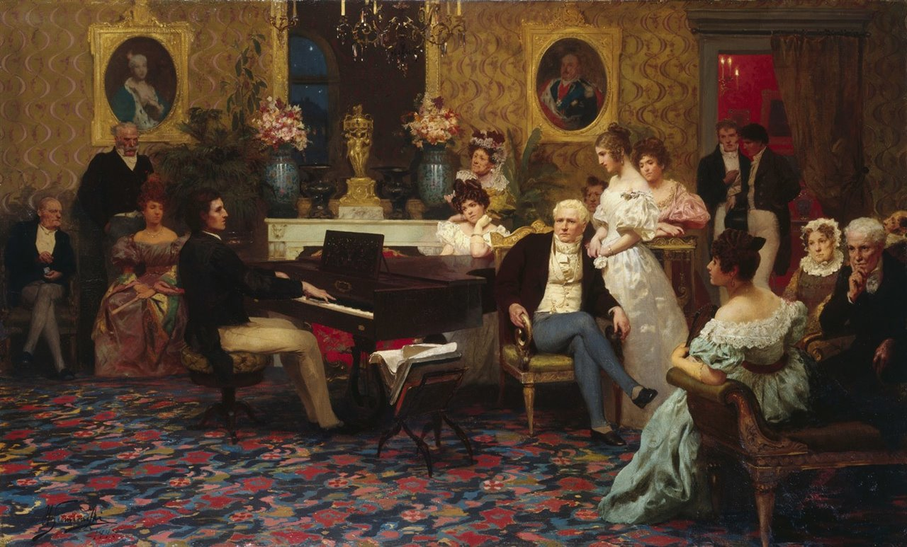
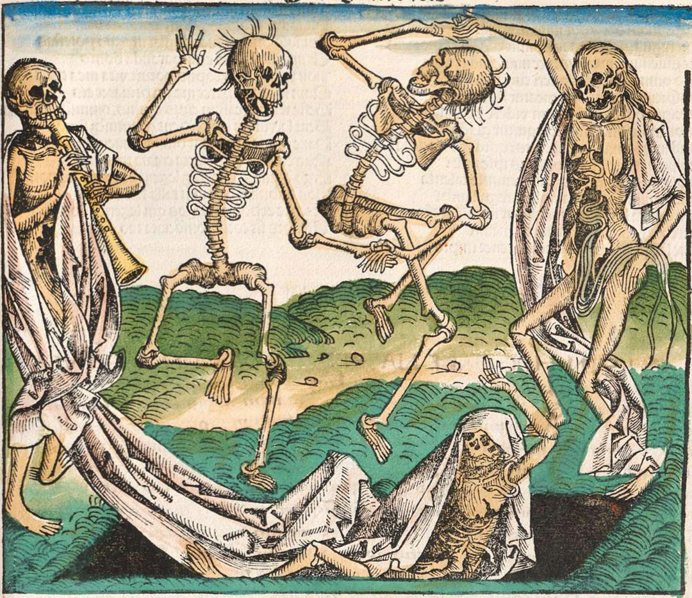
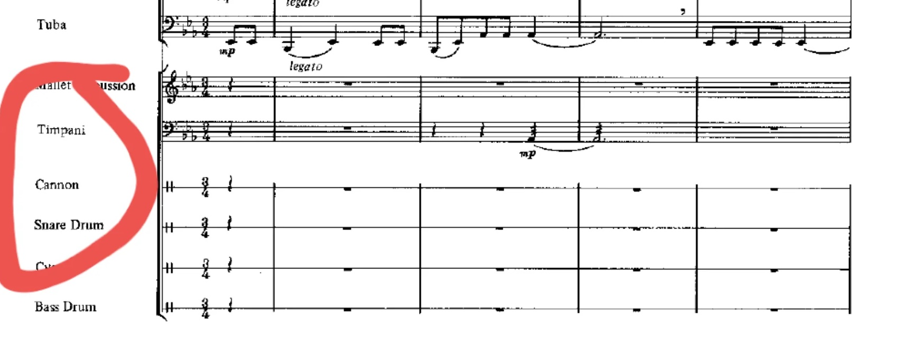

Piano, música programática, nacionalismos y ballet
En el Romanticismo se siguen utilizando prácticamente los mismos géneros que en el Clasicismo (sinfonía, concierto, cuarteto, etc.) y aparecen otros nuevos.
La música para piano
El piano solista se adaptó perfectamente a la expresión individual que buscaba el Romanticismo, convirtiéndose así en el instrumento romántico por excelencia. Muchos compositores de este periodo crearon magníficas obras para piano, como Schubert, Mendelssohn, Schumann o Brahms. Pero el gran poeta de este instrumento fue el compositor romántico y pianista Frédéric Chopin (1810-1849). Mientras que el lado poético del piano está representado magistralmente por Chopin, Franz Liszt (1811-1886) personifica al músico virtuoso, al genio admirado por todos (como Paganini lo será en el violín). Existen tres tipos de piezas principales:
- Nocturnos: melodías líricas y apacibles.
- Estudios: piezas virtuosas diseñadas para superar dificultades técnicas.
- Preludios: composiciones cortas, a menudo de forma libre, que expresan un momento o sentimiento.

La música programática
A partir de mediados del siglo XIX, algunos compositores crearon muchas de sus obras basándose, por ejemplo, en un texto literario o en una imagen. Mediante su música, sugerían estados de ánimo, paisajes, etc.; es decir, elementos extramusicales. Nace así la sinfonía programática y el poema sinfónico. Los máximos exponentes de estas creaciones serán Hector Berlioz y Franz Liszt, respectivamente.

La música nacionalista de la segunda mitad del siglo xix
El nacionalismo consiste, a grandes rasgos, en la búsqueda de identidad de un pueblo a través de su política, su economía y su cultura. El nacionalismo musical de la segunda mitad del siglo xix intentará apartarse del dominio de la música alemana e italiana. Así, los compositores buscarán la identidad de sus países a través de su folclore, sus historias y sus leyendas. Mucha de esta música tendrá, lógicamente, un gran contenido programático, y utilizará como vehículo de expresión, en muchos casos, el poema sinfónico. Entre otros se encuentran los siguientes compositores nacionalistas del siglo XIX: Isaac Albéniz o Granados en España, Nikolái Rimski-Kórsakov en Rusia, Edvard Grieg en Noruega, Jean Sibelius en Finlandia, y Dvorak o Smetana en la actual República Checa.
Orquesta y ballet
También se desarrollan la sinfonía romántica, el concierto para solista y orquesta y los balés . Las obras son más largas, complejas y emocionalmente intensas que en el Clasicismo.
 |
 |
ESCUCHAMOS PERO NO JUZGAMOS: SONATA - CONCIERTO - SINFONÍA - MÚSICA DE CÁMARA
🎧 Audición 7 - Piezas para piano
Vas a escuchar tres piezas de piano, identifica cuál es el preludio, cuál es el estudio y cuál es el nocturno.
🎧 Audición 8 - Música programática
Saint-Saëns - Danza Macabra - Guía Visual
- Coge una hoja en blanco o usa tu cuaderno. Escucha la Danza Macabra y dibuja o escribe lo que te transmite, como si fuese una historia. Después, mira el vídeo enlazado de Guía Visual: ¿Se parece lo que has dibujado/escrito con lo que quería transmitir el autor originalmente?
🎧 Audición 9 - Nacionalismos y poemas sinfónicos
- ¿Por qué Smetana ha titulado a la obra El Moldava? ¿Qué es el Moldava? ¿Dónde se encuentra?
- ¿Con qué movimiento artístico se corresponde esta obra? Por qué?
🎧 Audición 10 - Orquesta
- ¿Qué tipo de obra orquestal estamos escuchando? Defínela.
- ¿Qué te ha ayudado a identificarla?
- Esta obra está acompañada por bailarinas en escena representando una obra. ¿Cómo llamamos a este tipo de arte escénica?
- ¿Podríamos llamarla también música programática? ¿Por qué?
- Esta obra es un movimiento de una sinfonía. ¿Qué forma conoces que se use en sinfonías?
- ¿Sigue la estructura vista en el Clasicismo? Indica por qué.